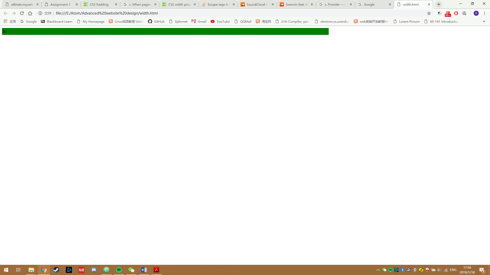

b. What is the minimum internet speed (connection speed) you may consider as a web designer and why?
I may consider 5Mbps as the minimum speed becasue there are many websites add a lot videos and images on their websites. It requires a stable internet connection to load them. The network in my home has very unstable connection that most of the time I cannot load the webpages properly, therefore I suggest a stable 5Mbps network as the minimum internet speed.
Question 2. Choose a website you like that has a responsive design:
a. a. Take 3 snapshots of the website using 3 different type of devices (laptop, wide-screen desktop, smartphone, tablet, etc..).
Figure 4: Soundcloud on iPhone 7P
Resolution: 1080*1920

Figure 5: Soundcloud on Laptop
Resolution: 1920*1080
Figure 6: Soundcloud on Android Tablet
Resolution: 1920*1080

c. Does it have accessibility features? give an example from the website.
Yes, it has accessibility features, following is the screenshot
Figure 7: Accessibility features
d. Which kind of viewing pattern does it have?
It is F-based viewing pattern
e. Does it have active white space or passive white space/ both/ none of them? example with screenshot is required.
It has active white space, following is the screenshot
Figure 8: Active White Space
Question 3. True or False
a. The first time you visit a site, the entire contents of the HTML file, every image referenced in the HTML code, and any CSS style sheets are downloaded to your hard drive.
True
b. To be successful, your web site design must be portable and accessible by users who have different browsers, operating systems, and computer platforms.
True
c. When pages share the same color scheme, logo, structure, and navigation, the web site offers a smooth transition from the main page to a secondary page.
True
d. You can assume that a document that is perfectly legible on paper will be easily legible online.
False
Question 4. fill in the blanks
a. ------------designs tend to have the same proportions as the printed page, which enforces scanning the page using paper-based reading habits.
Fixed-width
b. White space that is used deliberately is called--------------------.
active white space
c. Provide-------- ----------to the areas of your site that you find or expect to be in the greatest demand.
direct links
d. A computer monitor’s--------- is the width and height of the computer screen in pixels
Screen Resolution
Question 5:
Figure 9: Before changing

Figure 10: After changing
Figure 11: Add a new style rule

Figure 12: Save the width.css file